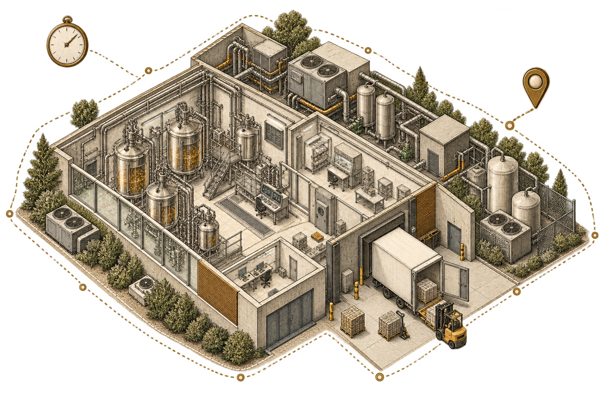
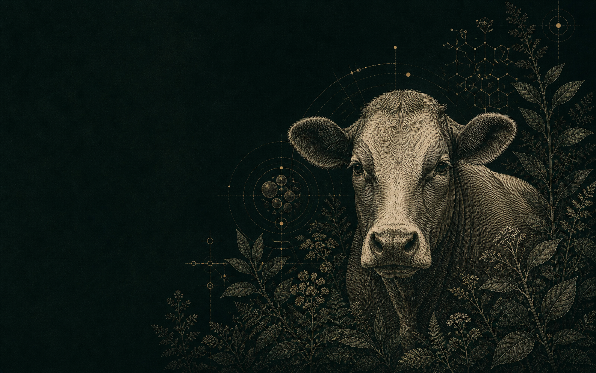
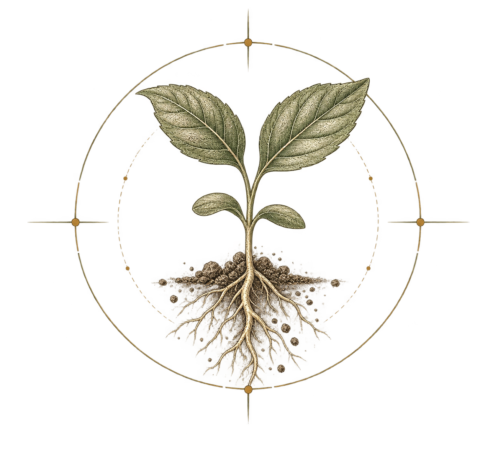
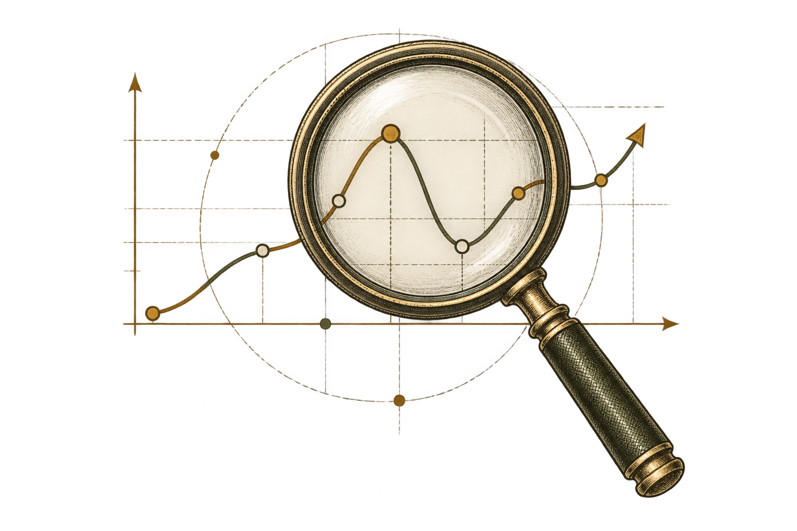
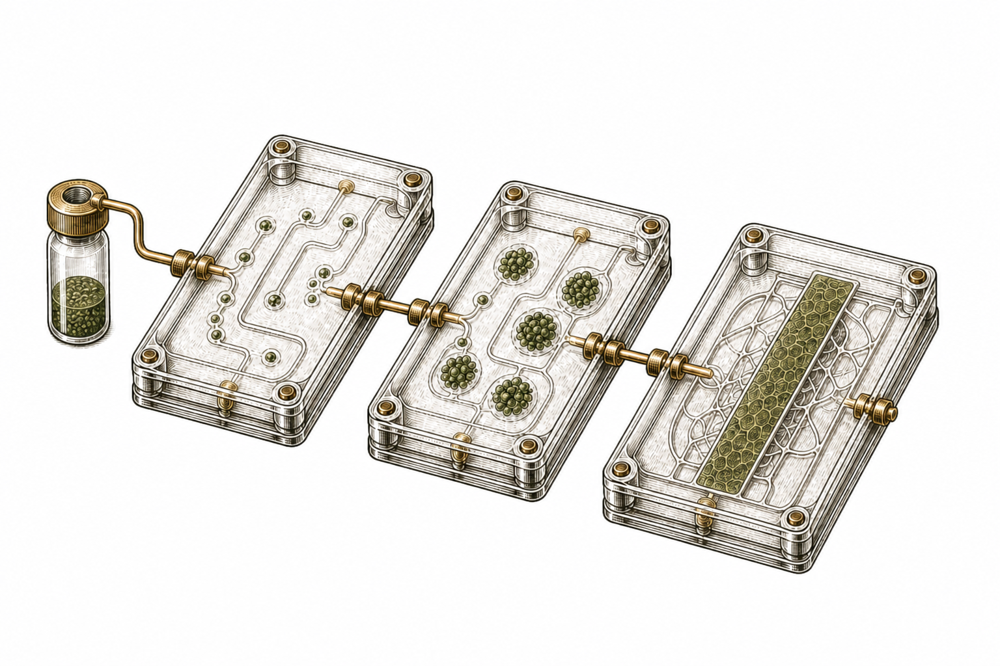
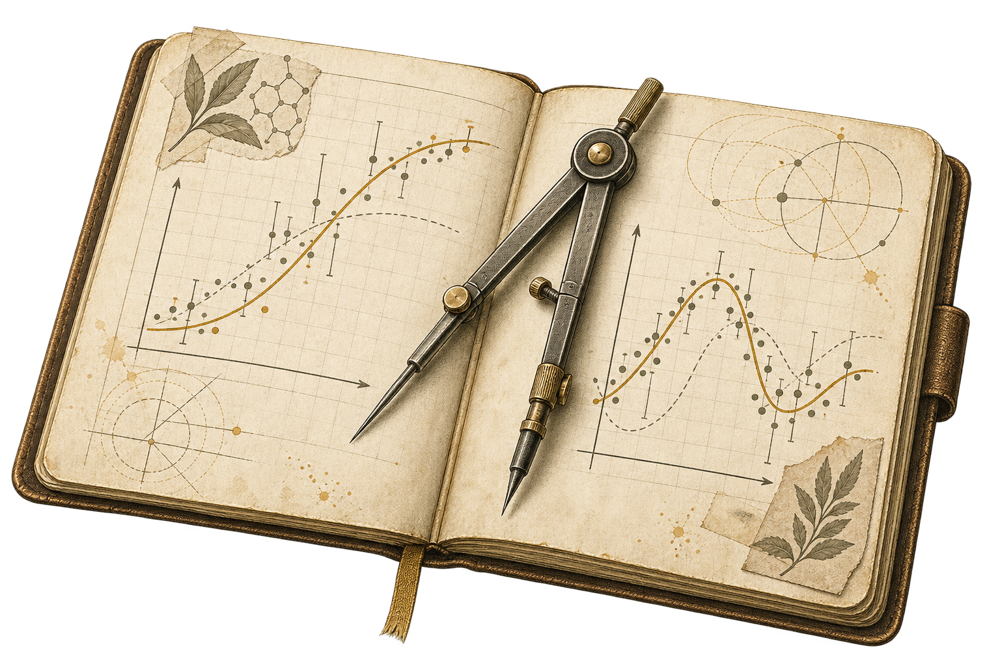
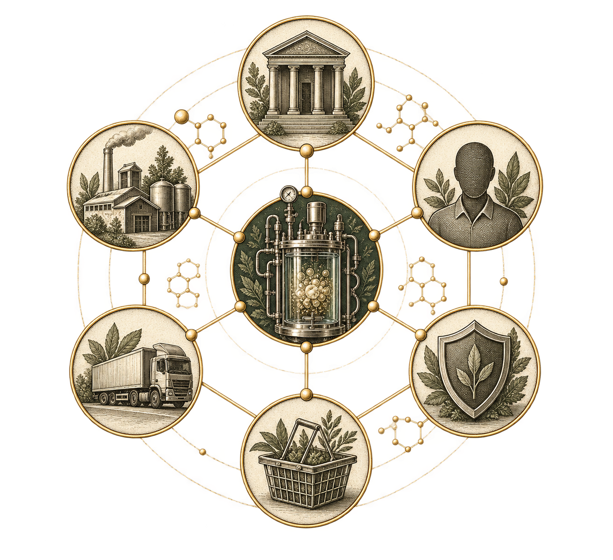
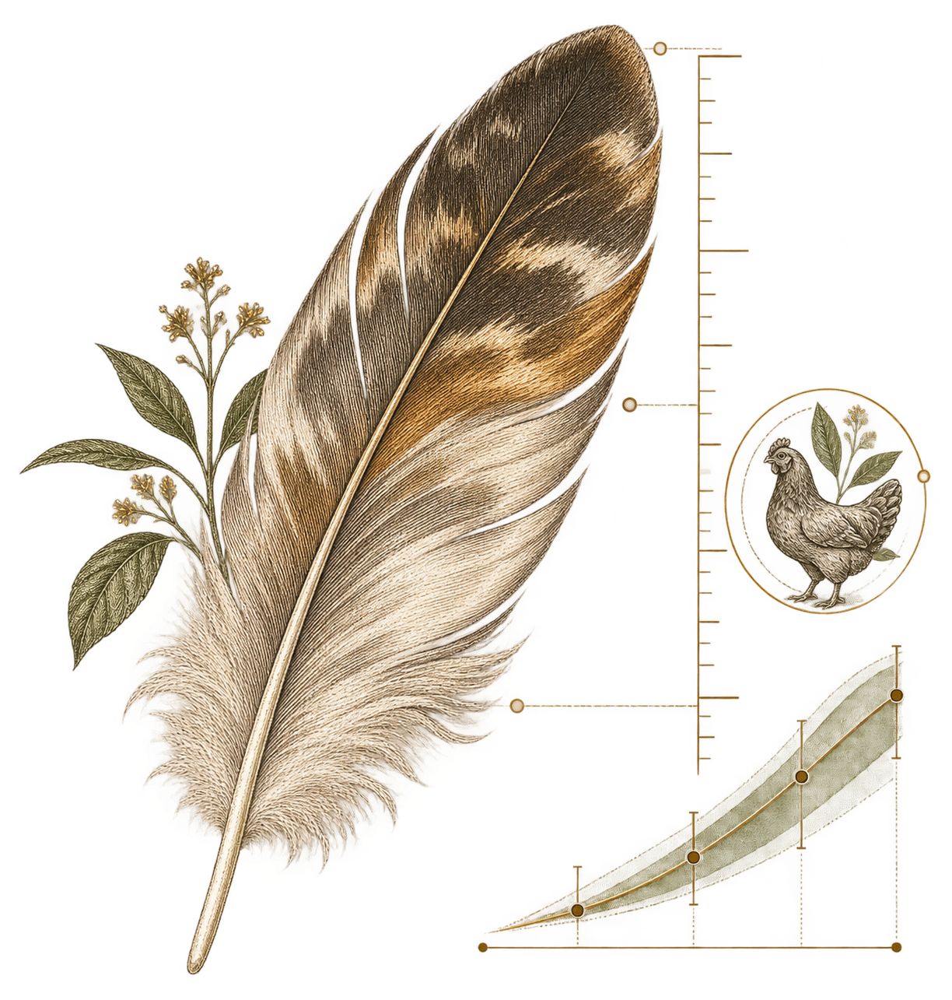
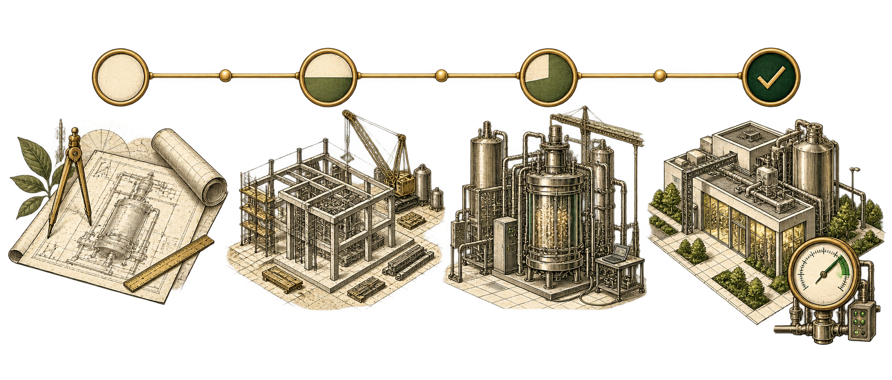
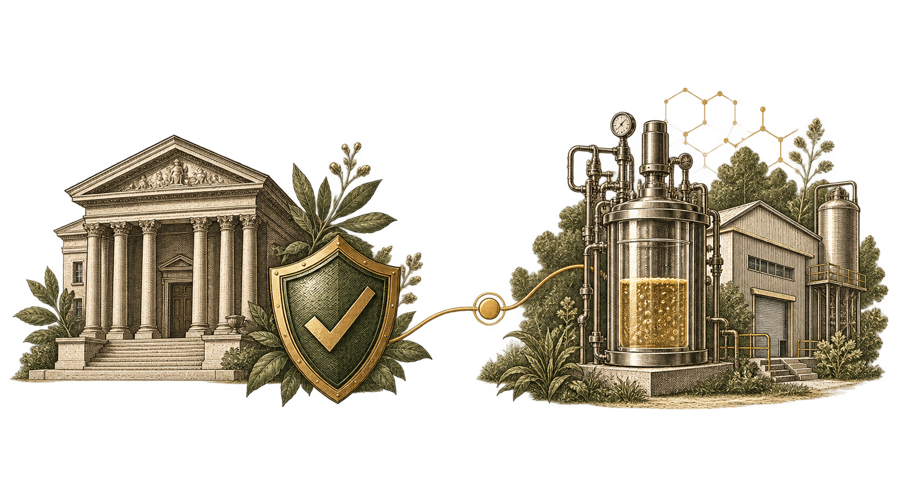

Reference
boundary

Defines the exact operator, facility, assets, product, process, jurisdiction and financing purpose.
Current: Wilson dossier 0/11.

Open financial standard / Research to mass production
Engineering capital for
cellular agriculture.
We invite researchers and laboratories into a common project-level financial interface where capital needs, development states, success cash flows, failure recovery and shared risk can be described in comparable terms.
01 / Common financial interface

Express capital, states, external
cash, recovery and shared factors.
Connect a transparent payoff
rule to the underlying project.

Aggregate compatible claims
under explicit common shocks.

Calculate exposure, loss, return,
tail risk and real value.
02 / Supporting evidence boundary

Defines the exact operator, facility, assets, product, process, jurisdiction and financing purpose.
Current: Wilson dossier 0/11.

Requires controlled exact-project operating, failure, cost, design and independent-review records.
Current: 0/15; calibration is not permitted.

Requires documentation of the financing failure, demand, credit, terms, completion, law and recovery.
Current: 0/22; no candidate is approved.

Requires observed financing, sold output, buyer substitution, attribution and independent assurance.
Current: 0/9; no impact claim is permitted.
State the baseline and what the current artifact can test against it.
Assign each risk to a party able to control, observe, price or absorb it.
Separate modeled cash-flow effects, measured performance and animal impact.
03 / Focused instrument family

One disclosed claim across ten
milestone-controlled projects.
Core: cash, exposure, loss and
shared risk made comparable.
A funded 0–20 claim absorbs loss
before the 20–100 priority claim.
It reallocates the same pool;
it does not create project value.

An external provider pays 30% of
resolved loss, subject to a cap.
Support remains separate from
project cash and provider credit.
The mechanics reconcile, but the
adverse investor gap remains.
Current decision: not shown financeable.
No royalties or carry go to us.